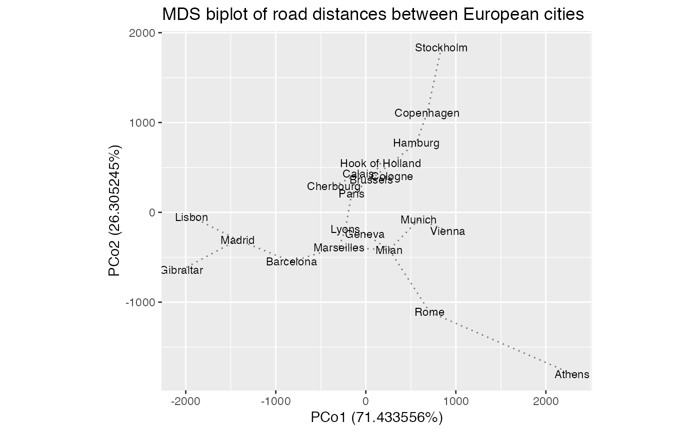

stat-biplot-spantree.RdThis stat layer identifies the \(n-1\) pairs among \(n\)
points that form a minimum spanning tree, then calculates the segments
between these poirs in the two dimensions x and y.
stat_spantree(mapping = NULL, data = NULL, geom = "segment", position = "identity", method = "euclidean", show.legend = NA, inherit.aes = TRUE, check.aes = TRUE, ...) stat_u_spantree(mapping = NULL, data = NULL, geom = "segment", position = "identity", method = "euclidean", show.legend = NA, inherit.aes = TRUE, check.aes = TRUE, ...) stat_v_spantree(mapping = NULL, data = NULL, geom = "segment", position = "identity", method = "euclidean", show.legend = NA, inherit.aes = TRUE, check.aes = TRUE, ...)
| mapping | Set of aesthetic mappings created by |
|---|---|
| data | The data to be displayed in this layer. There are three options: If A A |
| geom | The geometric object to use display the data |
| position | Position adjustment, either as a string, or the result of a call to a position adjustment function. |
| method | Passed to |
| show.legend | logical. Should this layer be included in the legends?
|
| inherit.aes | If |
| check.aes | If |
| ... | Additional arguments passed to |
An object of class StatSpantree (inherits from Stat, ggproto, gg) of length 3.
A minimum spanning tree (MST) on the point cloud \(X\) is a minimal
connected graph on \(X\) with the smallest possible sum of distances (or
dissimilarities) between linked points. These layers call stats::dist() to
calculate a distance/dissimilarity object and vegan::spantree() to
calculate the MST. The result is formatted with position aesthetics readable
by ggplot2::geom_segment().
If any aesthetics of the form .coord[0-9]+ are detected, then the lot of
them are used to calculate distances/dissimilarities. These should not be
assigend manually but generated using the convenience function ord_aes()
(see the examples). Otherwise, x and y are used. Either way, x and y
provide the position aesthetics.
An MST calculated on x and y reflects the distances among the points in
\(X\) in the reduced-dimension plane of the biplot. In contrast, one
calculated on the full set of coordinates reflects distances in
higher-dimensional space. Plotting this high-dimensional MST on the
2-dimensional biplot provides a visual cue as to how faithfully two
dimensions can encapsulate the "true" distances between points (Jolliffe,
2002).
ggbiplot() uses ggplot2::fortify() internally to produce a single data
frame with a .matrix column distinguishing the subjects ("u") and
variables ("v"). The stat layers stat_u() and stat_v() simply filter
the data frame to one of these two.
The geom layers geom_u_*() and geom_v_*() call the corresponding stat in
order to render plot elements for the corresponding matrix \(U\) or
\(V\). geom_biplot_*() selects a default matrix based on common practice,
e.g. \(U\) for points and \(V\) for arrows.
Jolliffe IT (2002) Principal Component Analysis, Second Edition. Springer Series in Statistics, ISSN 0172-7397. 10.1007/b98835 https://www.springer.com/gp/book/9780387954424
# Compare MDS to the spanning tree for road distances between European cities eurodist %>% cmdscale(k = 11) %>% as_tbl_ord() %>% augment() %>% # align to conventional compass orientation negate(2) %>% print() -> euro_mds#> # A tbl_ord of class 'cmds': (21 x 11) x (21 x 11)' #> # 11 coordinates, transformed: PCo1, PCo2, ..., PCo11 #> # #> # U: [ 21 x 11 | 1 ] #> PCo1 PCo2 PCo3 ... | .name #> | <chr> #> 1 2290. -1799. 53.8 | 1 Athens #> 2 -825. -547. -114. ... | 2 Barcelona #> 3 59.2 367. 178. | 3 Brussels #> 4 -82.8 430. 300. | 4 Calais #> 5 -352. 291. 457. | 5 Cherbourg #> # … with 16 more rows #> # #> # V: [ 21 x 11 | 1 ] #> PCo1 PCo2 PCo3 ... | .name #> | <chr> #> 1 2290. -1799. 53.8 | 1 Athens #> 2 -825. -547. -114. ... | 2 Barcelona #> 3 59.2 367. 178. | 3 Brussels #> 4 -82.8 430. 300. | 4 Calais #> 5 -352. 291. 457. | 5 Cherbourg #> # … with 16 more rowseuro_mds %>% ggbiplot() + stat_v_spantree( ord_aes(euro_mds), check.aes = FALSE, alpha = .5, linetype = "dotted" ) + geom_v_text(aes(label = .name), size = 3) + ggtitle("MDS biplot of road distances between European cities")